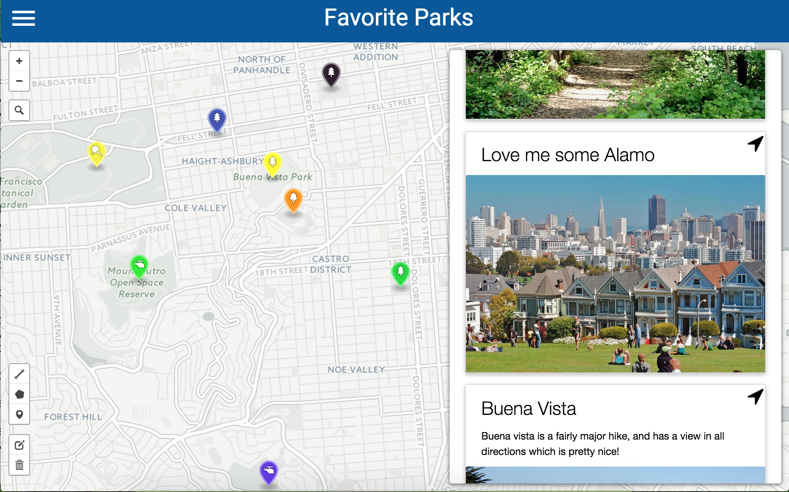
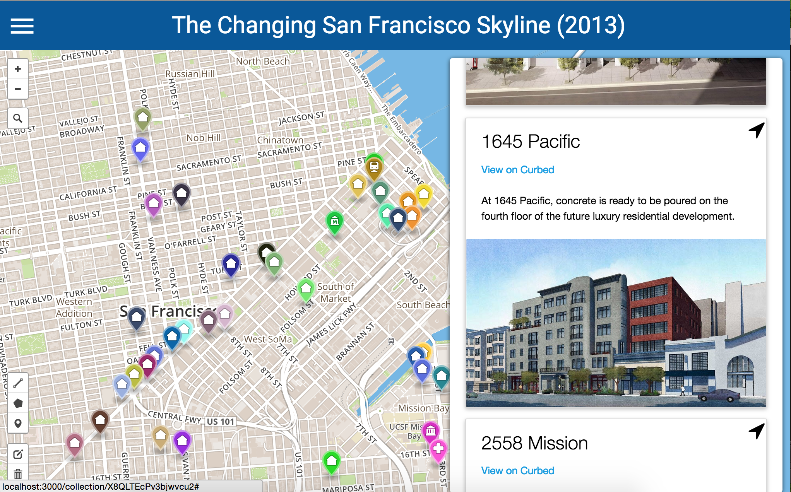
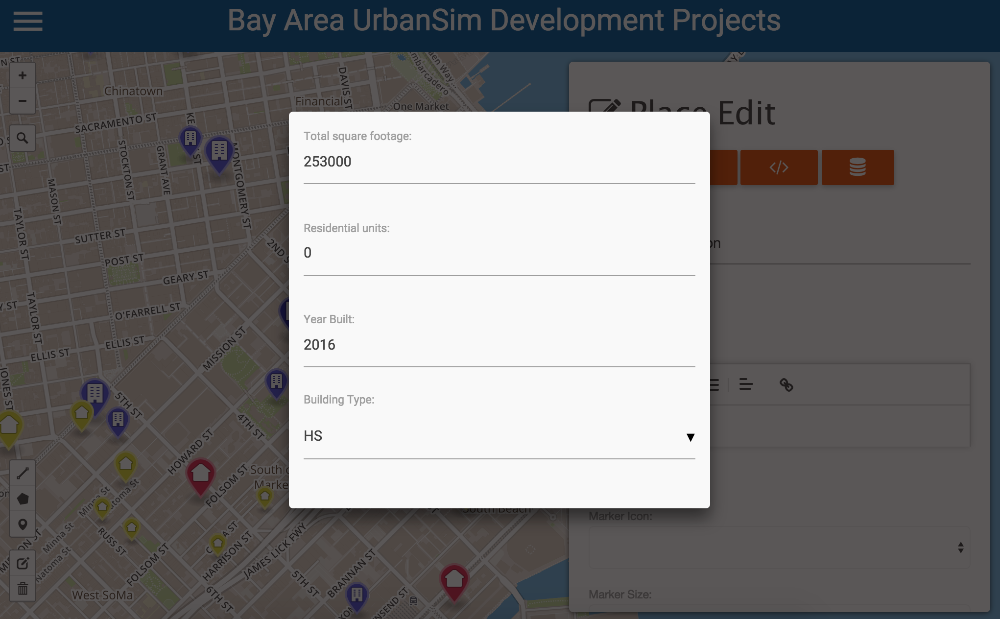
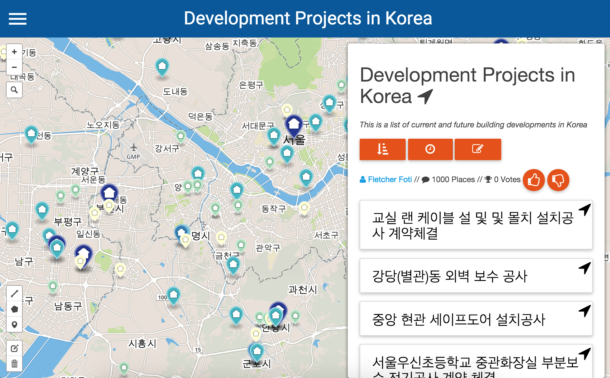
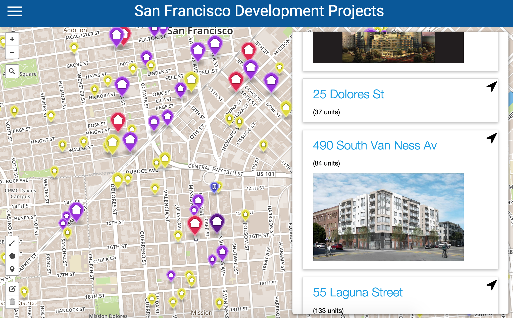

TogetherMap: Collaborative Mapping for Web and Mobile
The Name
What does TM mean?
TM is shorthand for TogetherMap. TM brings mapping and spatial data into a modern web and mobile app, which enables you to reach more users and to reach users in a more collaborative way. If you think of shapefiles-meets-google-docs you have the right idea.
Mission
What is the purpose of TM?
Generally, our mission is to provide an app for people to participate in the change that's happening in their communities; ways we think this might happen are through data collection or chat associated with places. Along the way we realized we were building a pretty useful multi-user environment for data collection and spatial data visualization, so we'll try out a few things and see what sticks. Example use cases are up next.
Examples
Simple collections of places, like saving your favorite parks.

Loading scraped web data of recent condo developments in San Francisco and talking about them.

Collecting data about places using simple web forms.

Worldwide use, like this collection of condo developments in Korea.

Custom theming and filtering of spatial data, and the ability for the user to switch themes and filters in order to explore spatial data.
